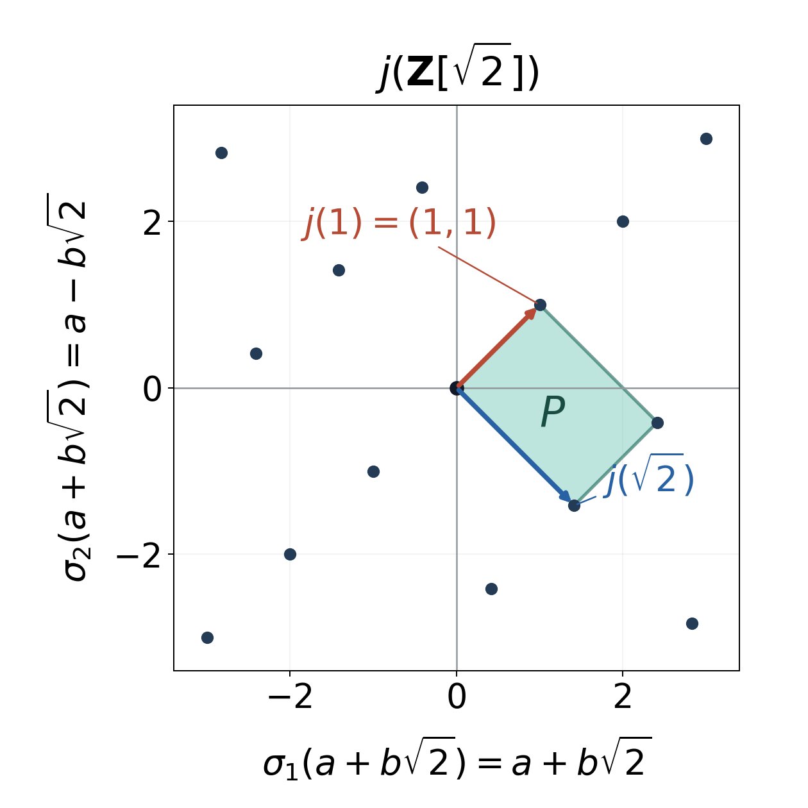

Lattices, Minkowski's theorem and the Minkowski embedding
Written by GPT-6.1 Sol (OpenAI) in Codex, Ultra setting, October 2026. Self-checked by the writing AI. Independent full-lesson AI review is pending. Public domain (CC0).
The discriminant can be seen as a volume. Sending an algebraic integer to all its archimedean embeddings produces a lattice, and its discriminant determines the volume of a fundamental cell. A sufficiently large symmetric convex region must meet that lattice away from the origin. Choosing the region carefully turns this geometric fact into a bound for the norm of an element in an ideal.
Prerequisites and measure
We use integral bases and the embedding formula for discriminants from Discriminants and integral bases, the field norm formula from Algebraic integers and rings of integers, and the ideal norm and module results from Norms, class groups, and modules over Dedekind domains. The only module classification needed here is Theorem 4.3 for \(A=\mathbf Z\): a finitely generated torsion-free abelian group is free.
The analysis prerequisites are the basic properties of Lebesgue measure taught in Measure and Integration: completeness, countable additivity, translation invariance, and the change-of-variables formula for an invertible linear map. Exact measure locators are [Fremlin, 112A, 113C, 115E–115G, 134A and 263A]. We also use compactness of closed bounded subsets of Euclidean space, continuity, and the area of a disc.
Throughout, \(n\geq1\). The space \[ K_{\mathbf R}=\mathbf R^{r_1}\times\mathbf C^{r_2}, \qquad n=r_1+2r_2, \] has ordinary Lebesgue measure, with each complex coordinate written as its real and imaginary parts. A complex disc of radius \(t\) has area \(\pi t^2\). A convention that doubles the measure of each complex coordinate multiplies the total measure by \(2^{r_2}\); covolumes in that convention must be divided by this factor here.
Discreteness and integral bases of lattices
A lattice in \(\mathbf R^n\) is a discrete additive subgroup \(\Lambda\). Here discreteness means that every point is isolated. For a subgroup it suffices to isolate zero: there is a \(\delta>0\) such that \[ \Lambda\cap\{x\mid \|x\|<\delta\}=\{0\}. \] Two distinct lattice points are then at least \(\delta\) apart, since their difference belongs to \(\Lambda\).
Every bounded set meets \(\Lambda\) in finitely many points. Indeed, a closed ball containing the set is compact and has a finite cover by balls of radius less than \(\delta/2\); each covering ball contains at most one lattice point. Also \(\Lambda\) is closed: a convergent sequence of its points is Cauchy, so eventually all its terms agree.
Lattice structure lemma. A discrete subgroup has the form \[ \Lambda=\mathbf Z v_1+\cdots+\mathbf Z v_r, \] where \(v_1,\ldots,v_r\) are linearly independent over \(\mathbf R\), and \(0\leq r\leq n\). Conversely every subgroup of this form is discrete.
Proof. If the subgroup is zero, take \(r=0\). Otherwise let \(V\) be its real span, of dimension \(r\), and choose a real basis \(w_1,\ldots,w_r\) from the subgroup. Put \(\Lambda_0=\sum\mathbf Z w_i\). Subtracting integral parts of the coordinates of an element of \(\Lambda\) gives a representative of its coset modulo \(\Lambda_0\) in \[ F_0=\left\{\sum t_iw_i\mid 0\leq t_i<1\right\}. \] This is bounded, so there are only finitely many such representatives. Thus \(\Lambda/\Lambda_0\) is finite; if its order is \(m\), then \[ \Lambda_0\subseteq\Lambda\subseteq \tfrac1m\Lambda_0. \] The middle group is finitely generated, because it is a submodule of the finite free \(\mathbf Z\)-module on the right and \(\mathbf Z\) is Noetherian. It is torsion-free, hence free by Theorem 4.3. Tensoring these inclusions with \(\mathbf Q\) shows that its rank is \(r\). A \(\mathbf Z\)-basis \(v_1,\ldots,v_r\) therefore has \(r\) members and spans \(V\) over \(\mathbf R\), so it is real linearly independent.
Conversely, the linear isomorphism \(\mathbf R^r\to V\) sending the standard basis to the \(v_i\) sends \(\mathbf Z^r\) to the indicated subgroup. Its continuous inverse isolates zero in that subgroup. The subspace \(V\) is closed in \(\mathbf R^n\), so this also proves discreteness in the ambient space. \(\square\)
The lattice is complete, or of full rank, when \(r=n\). Equivalently, \[ \Lambda\text{ is complete} \quad\Longleftrightarrow\quad \Lambda\text{ is discrete and }\mathbf R^n/\Lambda\text{ is compact}. \tag{1} \] For a full-rank lattice the closed parallelepiped \(\sum[0,1]v_i\) maps onto the quotient, proving compactness. Conversely, for a discrete subgroup with span \(V\ne\mathbf R^n\), orthogonal projection gives a continuous surjection \(\mathbf R^n/\Lambda\to V^\perp\). A positive dimensional Euclidean space is not compact, contradicting compactness of the quotient. This proves (1).
A cell whose volume counts the lattice
Let \(\Lambda\) be complete, and let \(T\) be the invertible real matrix whose columns are a lattice basis. The half-open parallelepiped \[ F=T[0,1)^n \] is a fundamental domain: the sets \(F+\lambda\), for \(\lambda\in\Lambda\), partition \(\mathbf R^n\). Apply \(T^{-1}\) and subtract the integral part of each coordinate to prove both existence and uniqueness of the representative.
The covolume is \[ \operatorname{covol}(\Lambda)=\operatorname{vol}(F)=|\det T|. \tag{2} \] A change of lattice basis multiplies \(T\) by a matrix in \(\operatorname{GL}_n(\mathbf Z)\), whose determinant is \(1\) or \(-1\). Thus the covolume is independent of the basis.
If \(\Lambda'\subseteq\Lambda\) has finite index, writing a basis of \(\Lambda'\) in a basis of \(\Lambda\) gives an integral matrix \(U\). The determinant-index formula from Discriminants and integral bases gives \[ \operatorname{covol}(\Lambda') =[\Lambda:\Lambda']\operatorname{covol}(\Lambda). \tag{3} \] For any invertible real map \(S\), formula (2) also gives \(\operatorname{covol}(S\Lambda)=|\det S|\operatorname{covol}(\Lambda)\).
Blichfeldt's lemma. If \(E\subseteq\mathbf R^n\) is measurable and \[ \operatorname{vol}(E)>\operatorname{covol}(\Lambda), \] there are distinct \(x,y\in E\) with \(x-y\in\Lambda\).
Proof. The lattice is countable. Its fundamental domains partition \(E\) into the measurable pieces \(E\cap(F+\lambda)\). Translate each piece into \(F\), obtaining \[ E_\lambda=(E-\lambda)\cap F. \] Translation invariance and countable additivity give \[ \sum_{\lambda\in\Lambda}\operatorname{vol}(E_\lambda) =\operatorname{vol}(E)>\operatorname{vol}(F). \] If all these translated pieces were pairwise disjoint, their union inside \(F\) would have measure equal to this sum, which is impossible. Choose \(z\in E_\lambda\cap E_\mu\) with \(\lambda\ne\mu\). Then \(x=z+\lambda\) and \(y=z+\mu\) lie in \(E\), and \(x-y=\lambda-\mu\) is a nonzero lattice vector. The argument also works when \(\operatorname{vol}(E)=\infty\). \(\square\)
From two points to a nonzero lattice point
Theorem 7.1 (Minkowski's convex body theorem). Let \(\Lambda\subseteq\mathbf R^n\) be a complete lattice and \(X\subseteq\mathbf R^n\) a convex set symmetric about zero, meaning \(X=-X\). If \[ \operatorname{vol}(X)>2^n\operatorname{covol}(\Lambda), \tag{4} \] then \(X\) contains a nonzero point of \(\Lambda\). If \(X\) is compact, the same conclusion holds with \(\geq\) in (4).
We first justify the measure in this statement for arbitrary convex sets. A convex set with empty interior lies in a proper affine subspace: otherwise it contains the simplex on \(n+1\) affinely independent points, which has nonempty interior. Such a subspace has measure zero, and completeness makes all its subsets measurable.
If a convex set has nonempty interior, translate an interior point to zero and choose \(B(0,\delta)\subseteq X\). Put \(C=\overline X\). For \(y\in C\) and \(0<\lambda<1\), approximate \(y\) by points \(y_k\in X\). Convexity puts the ball of radius \((1-\lambda)\delta\) centered at \(\lambda y_k\) inside \(X\). For large \(k\), this contains a neighborhood of \(\lambda y\); hence \(\lambda C\subseteq\operatorname{int}X\). For the compact measurable set \(C_R=C\cap[-R,R]^n\), with \(R>0\), scaling toward zero also stays in the box. Therefore \[ \operatorname{vol}(C_R\setminus\operatorname{int}X) \leq (1-\lambda^n)\operatorname{vol}(C_R). \] Let \(\lambda\) tend to one. Taking the union over positive integral \(R\) shows that \(C\setminus\operatorname{int}X\) is null. Since \(X\) lies between its interior and its closure, completeness proves its measurability.
Proof of Theorem 7.1. By linear change of variables, \[ \operatorname{vol}(\tfrac12X)=2^{-n}\operatorname{vol}(X). \] Under the strict inequality, Blichfeldt supplies distinct \(x,y\in\frac12X\) whose difference lies in \(\Lambda\). Both \(2x\) and \(-2y\) belong to \(X\); convexity gives \[ x-y=\tfrac12(2x)+\tfrac12(-2y)\in X. \] It is the required nonzero point.
For the compact case with \(\operatorname{vol}(X)\geq2^n\operatorname{covol}(\Lambda)\), apply the strict case to \((1+1/k)X\), for \(k\geq1\). The set \(X\) is nonempty, and its symmetry and convexity imply \(0\in X\). Thus all the resulting nonzero points \(\lambda_k\) lie in \(2X\), a bounded set. Only finitely many lattice points lie there, so one nonzero \(\lambda\) occurs for infinitely many \(k\). Along that subsequence, \[ \lambda/(1+1/k)\in X,\qquad \lambda/(1+1/k)\longrightarrow\lambda. \] Compactness makes \(X\) closed, proving \(\lambda\in X\). \(\square\)
Symmetry here must be about zero. Symmetry about an arbitrary center does not give the midpoint calculation used in the proof.
Putting a number field into real space
Let \(K\) have real embeddings \(\sigma_1,\ldots,\sigma_{r_1}\), and choose one embedding \(\tau_j\) from each of its \(r_2\) conjugate pairs of complex embeddings. Its Minkowski embedding is the additive injective map \[ j:K\longrightarrow K_{\mathbf R},\qquad \alpha\longmapsto (\sigma_1\alpha,\ldots,\sigma_{r_1}\alpha, \tau_1\alpha,\ldots,\tau_{r_2}\alpha). \tag{5} \] Injectivity follows from injectivity of any one field embedding. All these embeddings fix \(\mathbf Q\), so \(j\) is \(\mathbf Q\)-linear.
Write \(D_K=\operatorname{disc}(K)\). For a nonzero fractional ideal \(\mathfrak a\), its norm \(N\mathfrak a\) is the positive rational norm defined in Proposition 4.1; for an integral ideal it is \([\mathcal O_K:\mathfrak a]\).
Proposition 7.2. The groups \(j(\mathcal O_K)\) and \(j(\mathfrak a)\) are complete lattices, and \[ \begin{aligned} \operatorname{covol}(j(\mathcal O_K))&=2^{-r_2}\sqrt{|D_K|},\\ \operatorname{covol}(j(\mathfrak a))&= 2^{-r_2}\sqrt{|D_K|}\,N\mathfrak a. \end{aligned} \tag{6} \]
Proof. Choose an integral basis \(\omega_1,\ldots,\omega_n\). Let \(M\) be the real matrix with columns \(j(\omega_i)\), writing each complex coordinate in real and imaginary parts. Let \(S\) be the complex matrix with the same columns evaluated at all \(n\) embeddings, including both members of each complex pair.
For each complex pair, the two rows of \(S\) are obtained from the corresponding real and imaginary rows of \(M\) by \[ \begin{pmatrix}1&i\\1&-i\end{pmatrix}, \] whose determinant is \(-2i\). Consequently \(|\det S|=2^{r_2}|\det M|\). The discriminant formula is \((\det S)^2=D_K\), so \[ |\det M|=2^{-r_2}\sqrt{|D_K|}>0. \] Thus the columns of \(M\) are a real basis and generate the complete lattice \(j(\mathcal O_K)\). This proves the first formula.
For a nonzero integral ideal, the subgroup \(j(\mathfrak a)\) has index \(N\mathfrak a\) in \(j(\mathcal O_K)\). Formula (3) proves completeness and the second formula. For a fractional ideal, choose a positive integer \(d\) with \(d\mathfrak a\) integral. The map \(j\) intertwines multiplication by \(d\) with scalar multiplication by \(d\) on \(\mathbf R^n\). Hence \[ \operatorname{covol}(j(d\mathfrak a)) =d^n\operatorname{covol}(j(\mathfrak a)), \qquad N(d\mathfrak a)=d^nN\mathfrak a. \] Apply the integral case and cancel \(d^n\). \(\square\)
For example, \(\mathcal O_{\mathbf Q(\sqrt2)}=\mathbf Z[\sqrt2]\), with discriminant \(8\). Its lattice basis is \[ j(1)=(1,1),\qquad j(\sqrt2)=(\sqrt2,-\sqrt2). \] The determinant is \(-2\sqrt2\), and the covolume is \(2\sqrt2=\sqrt8\).

Figure 1. The plotted points are \((a+b\sqrt2,a-b\sqrt2)\) for integers \(a,b\); only points in the displayed window are shown. The shaded closed parallelogram has vertices \(0\), \(j(1)\), \(j(\sqrt2)\), and \(j(1+\sqrt2)\), and area \(2\sqrt2\). To partition the plane uniquely, use its half-open version. The construction illustrates (2) and (6); see [Milne ANT, Proposition 4.26].
Choosing a body to bound the norm
The field norm is \[ |N_{K/\mathbf Q}(\alpha)| =\prod_{i=1}^{r_1}|\sigma_i\alpha| \prod_{j=1}^{r_2}|\tau_j\alpha|^2. \tag{7} \] A uniform bound on the absolute values of all these coordinates therefore bounds the norm.
Proposition 7.3. For every nonzero fractional ideal \(\mathfrak a\) of a number field \(K\), there is a nonzero \(\alpha\in\mathfrak a\) such that \[ |N_{K/\mathbf Q}(\alpha)| \leq \left(\frac2\pi\right)^{r_2}\sqrt{|D_K|}\,N\mathfrak a. \tag{8} \]
Proof. For \(t>0\), consider the product of intervals and complex discs \[ X_t=\{(x_1,\ldots,x_{r_1},z_1,\ldots,z_{r_2}) \mid |x_i|\leq t,\ |z_j|\leq t\}. \] It is compact, convex, and symmetric about zero, with \[ \operatorname{vol}(X_t)=2^{r_1}\pi^{r_2}t^n. \] Choose \(t\) by \[ t^n=(2/\pi)^{r_2}\sqrt{|D_K|}\,N\mathfrak a. \] Since \(n=r_1+2r_2\), its volume is exactly \(2^n\operatorname{covol}(j(\mathfrak a))\). The compact form of Theorem 7.1 gives a nonzero \(j(\alpha)\) in this body. Formula (7) gives \(|N(\alpha)|\leq t^{r_1+2r_2}=t^n\), proving (8). \(\square\)
The complex factors are discs, not squares in their real and imaginary coordinates. Their areas account for the \(\pi\) in the constant. A sharper choice of body, adapted to a sum of coordinate absolute values, gives the class-number bound in the next lesson.
A geometric proof of the two-square prime theorem
Let \(p\equiv1\pmod4\) be prime. The finite-field multiplicative group is cyclic, as proved in the Gaussian example of Decomposition of primes in extensions. Hence there is an integer \(u\) with \(u^2\equiv-1\pmod p\).
The congruence lattice \[ \Lambda_{p,u}=\{(a,b)\in\mathbf Z^2\mid a\equiv ub\pmod p\} \] has basis \((p,0),(u,1)\) and covolume \(p\): write \(a=pk+ub\). The open disc \[ X=\{(a,b)\in\mathbf R^2\mid a^2+b^2<2p\} \] has area \(2\pi p>4p\). By Minkowski it contains a nonzero point of \(\Lambda_{p,u}\). At that point, \[ a^2+b^2\equiv(u^2+1)b^2\equiv0\pmod p. \] The positive integer \(a^2+b^2\) is less than \(2p\) and divisible by \(p\), so it equals \(p\).
The use of the open disc makes the last inequality strict. Also \(2=1^2+1^2\). A prime congruent to \(3\pmod4\) cannot be a sum of two integer squares, since each square is \(0\) or \(1\) modulo \(4\). This proves the full prime version of Fermat's two-square theorem.
For a concrete instance take \(p=13,u=5\). The point \((3,-2)\) lies in the congruence lattice because \(3\equiv5(-2)\pmod{13}\), and gives \(13=3^2+(-2)^2\).
Exercises
-
Easy — a complex ideal lattice. Compute the covolumes of \(j(\mathbf Z[i])\) and \(j((2+i))\), using the stated measure. Verify the second answer by the real matrix of multiplication by \(2+i\).
-
Medium — the overlap argument. Prove Blichfeldt's lemma for every measurable set of volume greater than the covolume, including unbounded sets. Explain why the two points it supplies are distinct.
-
Medium — two norm forms. Give the congruence-lattice proof that every prime \(p\equiv1\pmod4\) is \(a^2+b^2\). Then prove that every prime \(p\equiv1\) or \(3\pmod8\) is \(a^2+2b^2\). For the second part, first construct a square root of \(-2\) modulo \(p\); an eighth root of unity in a finite extension of \(\mathbf F_p\) is useful.
-
Hard — the optimal volume threshold. Put \(c=\operatorname{covol}(\Lambda)\). For every \(0<\varepsilon<2^nc\), construct a compact convex set symmetric about zero, of volume \(2^nc-\varepsilon\), with no nonzero lattice point. Treat \(\varepsilon=2^nc\), and explain why larger \(\varepsilon\) are impossible. Give a noncompact convex set of volume exactly \(2^nc\) with no nonzero lattice point.
Solutions
1. In \(\mathbf Q(i)\), \(r_2=1\) and \(D_K=-4\), so (6) gives \(\operatorname{covol}(j(\mathbf Z[i]))=\frac12\sqrt4=1\). The basis \(1,i\) gives the usual square lattice in real and imaginary coordinates.
Multiplication by \(2+i\) sends \(1\) to \(2+i\) and \(i\) to \(-1+2i\). Its real matrix is \[ \begin{pmatrix}2&-1\\1&2\end{pmatrix}, \] with determinant \(5\). Thus \(\operatorname{covol}(j((2+i)))=5\). Equivalently the ideal norm is \(N(2+i)=|2+i|^2=5\), and (6) gives the same answer.
2. Let \(F=T[0,1)^n\). Partition the measurable set \(E\) by the disjoint translates \(F+\lambda\), and translate the intersections into \(F\). If the resulting sets were pairwise disjoint, countable additivity would give \[ \operatorname{vol}(E) =\sum_{\lambda\in\Lambda}\operatorname{vol}((E-\lambda)\cap F) \leq\operatorname{vol}(F), \] contrary to the hypothesis. This includes infinite volume: a disjoint union inside \(F\) cannot have infinite measure. An overlap for two different translates gives \(z+\lambda,z+\mu\in E\) with difference \(\lambda-\mu\ne0\). Uniqueness of the fundamental-domain representative ensures that the indices are distinct when a pair of translated pieces overlaps.
3. For \(p\equiv1\pmod4\), choose \(u^2\equiv-1\pmod p\). The lattice with basis \((p,0),(u,1)\) has covolume \(p\). The open disc of squared radius \(2p\) has area \(2\pi p>4p\), so it contains a nonzero congruence-lattice point. Its squared norm is a positive multiple of \(p\) below \(2p\), proving that it is \(p\).
Now let \(p\equiv1\) or \(3\pmod8\). In a splitting field of \(X^8-1\) over \(\mathbf F_p\), choose a primitive eighth root \(\zeta\). Such a root exists: the polynomial has eight distinct roots because \(p\) is odd; these roots form a finite multiplicative subgroup of order eight, which is cyclic. Put \(s=\zeta-\zeta^{-1}\). Since \(\zeta^4=-1\) and \(\zeta^{-2}=-\zeta^2\), \[ s^2=\zeta^2-2+\zeta^{-2}=-2. \] If \(p\equiv1\pmod8\), then \(s^p=s\). If \(p\equiv3\pmod8\), use \[ \zeta^3=-\zeta^{-1},\qquad \zeta^{-3}=-\zeta \] to obtain \(s^p=\zeta^3-\zeta^{-3}=s\) again. The roots of \(X^p-X\) in any extension are exactly the \(p\) members of \(\mathbf F_p\), since all those members are roots and the polynomial has degree \(p\). Thus \(s\in\mathbf F_p\), giving \(u^2\equiv-2\pmod p\).
Use the same congruence lattice, but the open ellipse \[ X=\{(a,b)\mid a^2+2b^2<2p\}. \] Its semiaxes are \(\sqrt{2p}\) and \(\sqrt p\), so its area is \(\pi\sqrt2\,p>4p\). The last inequality follows from \(\pi>3>2\sqrt2\). A nonzero lattice point in it satisfies \(p\mid a^2+2b^2\). This positive integer is below \(2p\), and hence equals \(p\). For example, \(3=1^2+2\cdot1^2\), \(11=3^2+2\cdot1^2\), and \(17=3^2+2\cdot2^2\).
4. Write \(\Lambda=T\mathbf Z^n\) and \(|\det T|=c\). For the prescribed range of \(\varepsilon\), put \[ t=\left(1-\frac{\varepsilon}{2^nc}\right)^{1/n}, \qquad X=T[-t,t]^n. \] Then \(0<t<1\), and \(X\) is compact, convex, symmetric about zero, with volume \[ |\det T|(2t)^n=2^nc-\varepsilon. \] Every nonzero point of \(\mathbf Z^n\) has an integral coordinate of absolute value at least one, so none belongs to \([-t,t]^n\). Therefore \(X\cap\Lambda=\{0\}\).
At \(\varepsilon=2^nc\), use \(X=\{0\}\). Larger \(\varepsilon\) would require negative volume and cannot occur. Finally, the open parallelepiped \(T(-1,1)^n\) is convex and symmetric, has volume exactly \(2^nc\), and contains no nonzero lattice point. It is not compact. Thus the factor \(2^n\) is optimal, and compactness is needed for the stated weak-inequality conclusion.
What this lesson does not prove
We import the embedding formula for field norms from Lesson 1, the integral-basis discriminant and determinant-index formulas from Lesson 2, ideal norms from Proposition 4.1, and finite torsion-free module freeness over \(\mathbf Z\) from Theorem 4.3. The elementary cyclicity result used in the prime examples is proved in the Gaussian example of Lesson 5.
The basic measure, linear change-of-variables, compactness, and disc-area results listed at the start are analysis prerequisites. Measurability of the convex sets used in Minkowski's theorem is justified above. The sharper small-norm constant, finiteness of the ideal class group, and Dirichlet's unit theorem are proved in the following lessons. No assertion about the density of represented primes is needed here.
References
- [Milne ANT] J. S. Milne, Algebraic Number Theory, version 3.08 (2020), Chapter 4, “Lattices,” Lemma 4.14, Proposition 4.15, Remark 4.16, Theorems 4.17 and 4.19, and “Some calculus”; Proposition 4.26 gives the number-field covolume. Pages 73–80. Lecture notes.
- [Hecke] Erich Hecke, Vorlesungen über die Theorie der algebraischen Zahlen, §32, Sätze 94–95, pp. 116–118, the linear-form version of Minkowski's theorem and its translation to conjugate complex coordinates.
- [Fremlin] D. H. Fremlin, Measure Theory, 112A and 113C, the measure and countable-additivity framework; 115E–115G, complete Lebesgue measure and Borel sets; 134A, translation invariance; 263A, linear maps and the absolute determinant. Chapters 11, 13, and 26.